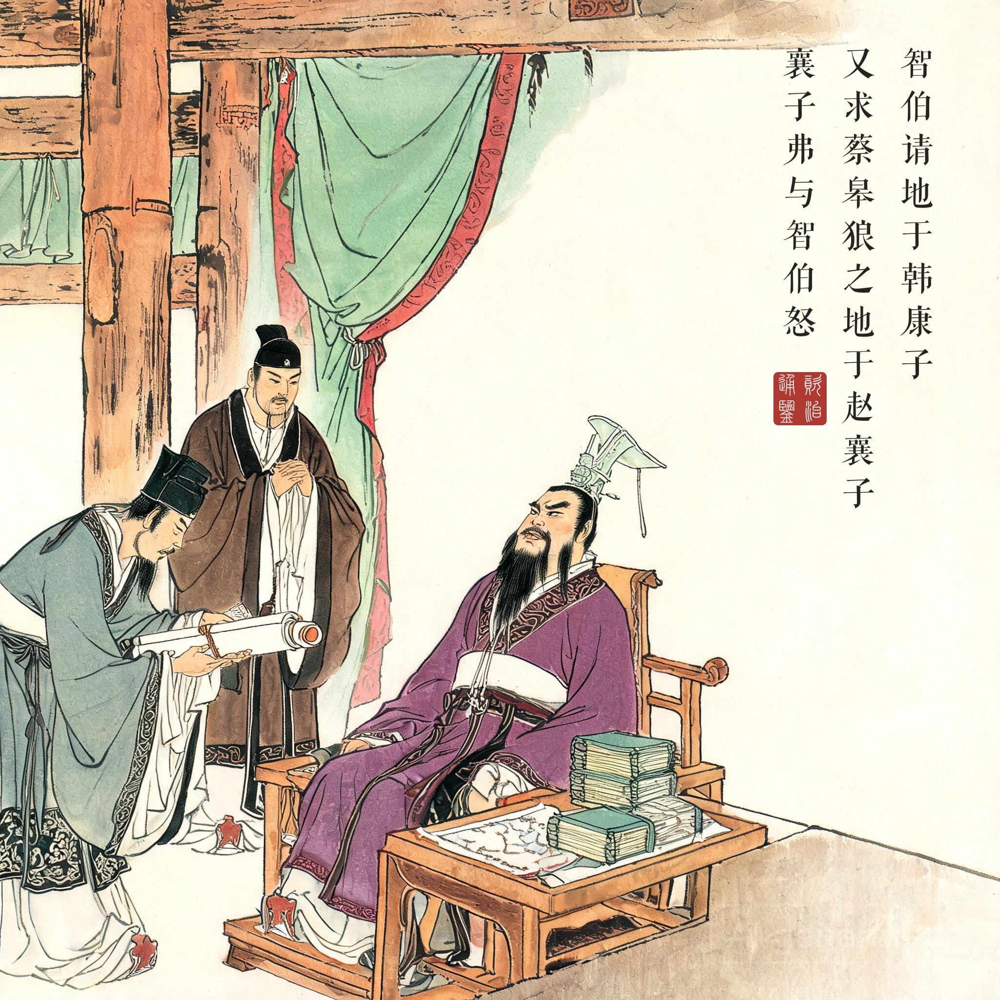
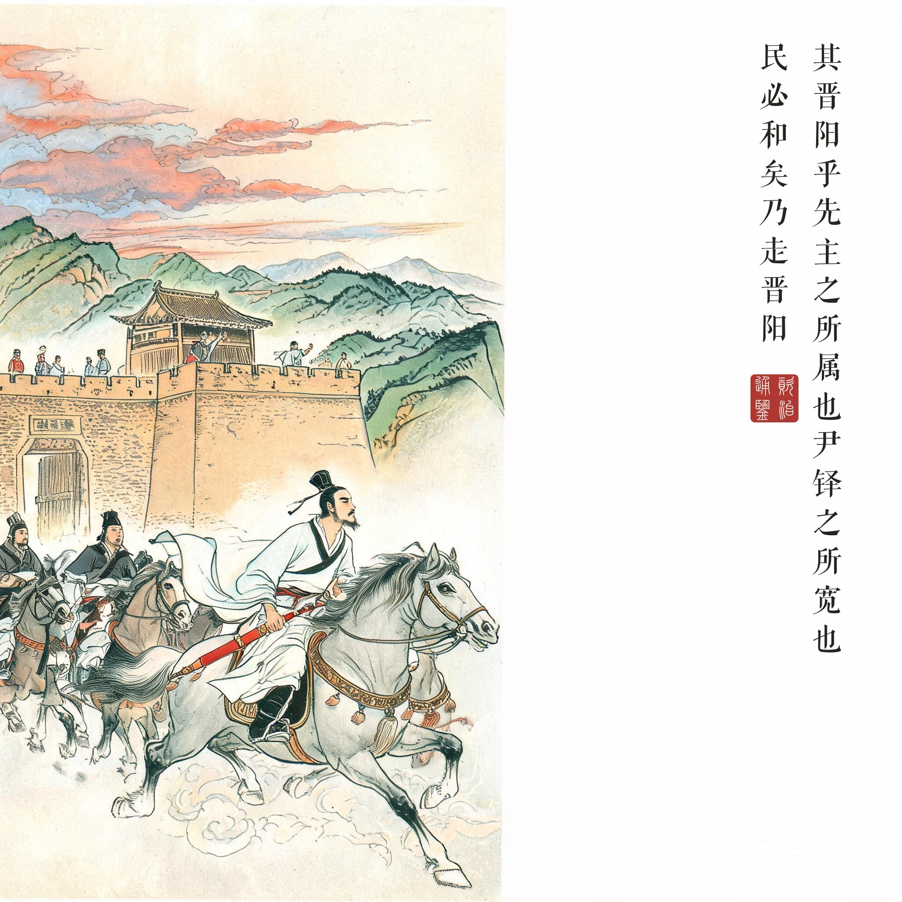
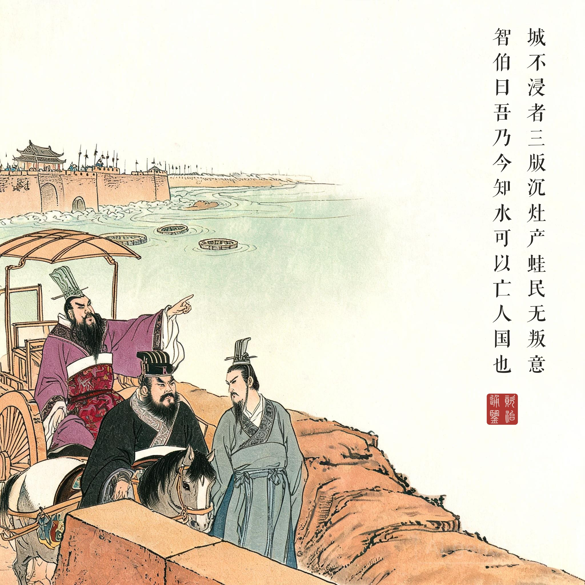
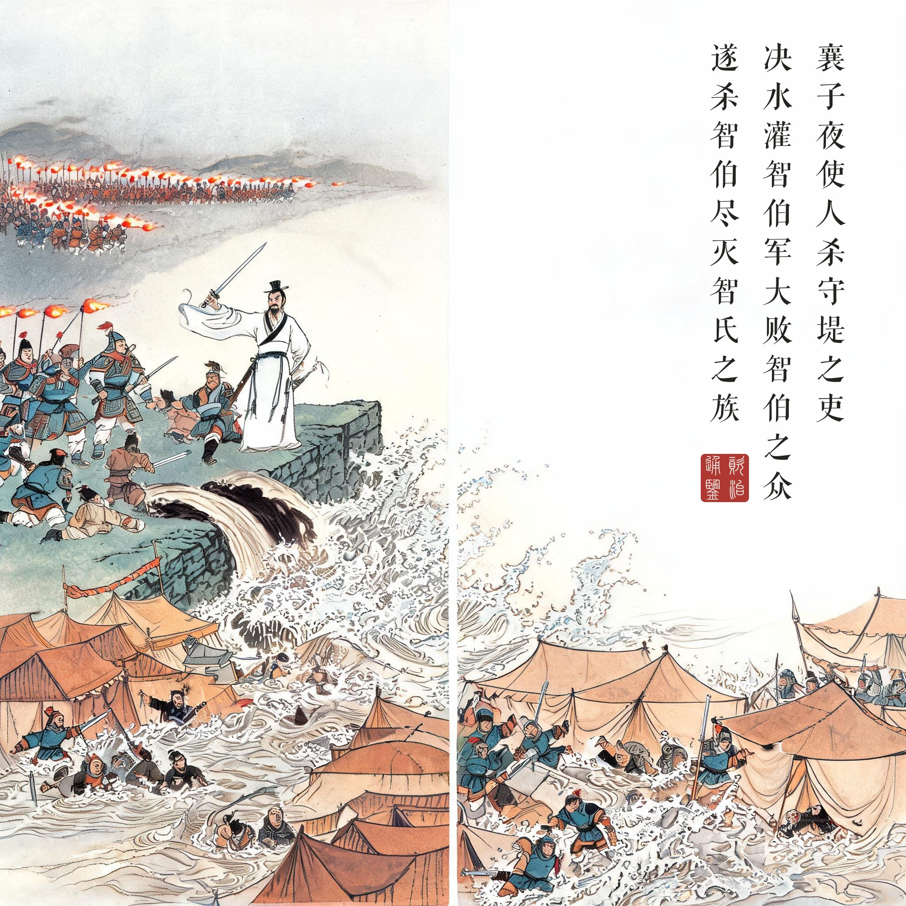

智伯之亡也，才胜德也。夫才与德异，而世俗莫之能辨，通谓之贤……才者，德之资也；德者，才之帅也。是故才德全尽谓之圣人，才德兼亡谓之愚人，德胜才谓之君子，才胜德谓之小人。与其得小人，不若得愚人。
——司马光以"才胜德"三字论定智伯之亡，为全书开卷第一义：历史的第一课不是权谋，而是识人。
为什么"三家分晋"是全书第一事。《资治通鉴》记事起于周威烈王二十三年（公元前 403 年），开卷第一句便是"初命晋大夫魏斯、赵籍、韩虔为诸侯"。此时三家分晋早已生米成炊五十余年，天子不过是补了一纸册命——司马光偏偏从这纸册命写起，紧接着连篇"臣光曰"痛论：天子之职莫大于礼，礼莫大于分，分莫大于名。名分一坏，周室虽在，天下已不是那个天下。本回四幅所画的正文，则是他倒回去补叙的因果：不可一世的智氏如何一步步把自己作死，顺手把韩、赵、魏推成战国开幕的三位主角。
智伯不是没被提醒。选接班人时智果早就断言"智宗必灭"；蓝台之宴戏弄韩君、羞辱段规，家臣智国引《夏书》苦谏"难必至矣"；围晋阳时谋士絺疵当面点破"韩、魏必反"，他转头竟把这话原封告诉韩魏二君。倒是韩魏两家的家臣看得通透：给他地，让他更骄——"将欲取之，必姑与之"。骄兵必败的每一步，都是智伯自己替对手走完的。
水与人心。晋阳被围岁余，"沉灶产蛙"而"民无叛意"，靠的是尹铎治晋阳时"损其户数"、宽政积下的民心；襄子逃难途中对长子、邯郸的两句反问——城是民力修的、仓是民脂填的——是中国政治思想里很早的"民心本位"论。而"吾乃今知水可以亡人国也"一句得意忘形，同时点醒了车旁二人：汾水灌得了安邑，绛水灌得了平阳——今日灌晋阳之水，明日就可能灌进自家门。
画外一笔：豫让。紧接本回，《通鉴》记下智伯头颅被漆为饮器后，家臣豫让漆身吞炭、两次行刺赵襄子。襄子擒而释之，再擒再叹："智伯死无后，而此人欲为报仇，真义士也！"豫让答那句千古名言——"凡吾所为者，极难耳。然所以为此者，将以愧天下后世之为人臣怀二心者也。"谋略与忠义的对照，让开卷这页在冷峻之外透出温度。
读画小识。第三幅中魏桓子执辔、韩康子随侧，正是原文"桓子肘康子，康子履桓子之跗"的肘足之谋——司马光写密谋只用一肘一踩两个动作，画中二人交换的眼色便是伏笔；第四幅取夜决堤水、三面合围之势，智伯本人不入画——他的下场留在画外，留给题款最后一句"遂杀智伯，尽灭智氏之族"。"唇亡齿寒"出自本回张孟谈之口（语脉上承《左传》宫之奇谏假道），与"才胜德"同为这一回留给后世的两枚成语印。